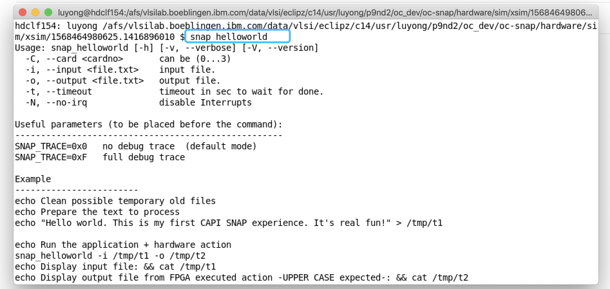

Run hls_helloworld
snap_config
cd oc-accel
./ocaccel_workflow.py
Then a KConfig window will popped up. If it doesn't, check Required tools and search 'kconfig' on the homepage.

Select HLS HelloWorld in "Action Type".

There are some other choices listed in the menu. Please input OCSE_ROOT path. Select xsim (the default simulator).
To select a TRUE/FALSE feature, press "Y" or "N". After everything done, move cursor to "Exit".
Note
This Kconfig menu is editable. If you want to add new features or enrich your own menu, please edit scripts/Kconfig file.
Then it starts to execute many steps to build a simulation model. It needs several minutes. While waiting for it, open another terminal tab and try to get familiar with some environmental variables. Open snap_env.sh and check the very basic ones:
export ACTION_ROOT=<path_of_oc-accel>/actions/hls_helloworld
export TIMING_LABLIMIT="-200"
export OCSE_ROOT=<path_to_ocse>/ocse
Simulation
ocaccel-workflow.py continues running and prints:
SNAP Configured
You've got configuration like:
ACTION_ROOT /afs/vlsilab.boeblingen.ibm.com/data/vlsi/eclipz/c14/usr/luyong/p9nd2/oc_dev/oc-accel/actions/hls_helloworld
FPGACARD AD9V3
FPGACHIP xcvu3p-ffvc1517-2-e
SIMULATOR xsim
CAPI_VER opencapi30
OCSE_ROOT ../ocse
--------> Environment Check
vivado installed as /afs/bb/proj/fpga/xilinx/Vivado/2018.3/bin/vivado
gcc installed as /bin/gcc
xterm installed as /bin/xterm
OCSE path /afs/vlsilab.boeblingen.ibm.com/data/vlsi/eclipz/c14/usr/luyong/p9nd2/oc_dev/ocse is valid
SNAP ROOT /afs/vlsilab.boeblingen.ibm.com/data/vlsi/eclipz/c14/usr/luyong/p9nd2/oc_dev/oc-accel is valid
Environment check PASSED
--------> Make the simulation model
Runnig ... check ./snap_workflow.make_model.log for details of full progress
[CREATE_SNAP_IPs.....] start - [=========== ] 37%
Then a Xterm window will popped up. (If it doesn't, check if you have installed it by typing xterm in your terminal.)

This Xterm window is where you run your application (software part). You can run anything as many times as you want in the xterm window, just like running in the terminal of a real server with FPGA card plugged.
Warning
If you want to save the content running in this xterm window, please use script before running any commands. When you exit xterm window, everything is saved to a file -- "typescript" is its default name.
$ script
Script started, file is typescript
...... Run Anything .....
$ exit
exit
Script done, file is typescript
Now let's run application snap_helloworld. It is located in $ACTION_ROOT/sw, where $ACTION_ROOT is <path_of_oc-accel>/actions/hls_helloworld. In the above window, it prints the help messages because it requires two arguments: an input text file and an output text file.
We have prepared a script in $ACTION_ROOT/tests/hw_test.sh and you can run it directly.
This example is asking FPGA to read the input file from host memory, converting the letters to capital case, and write them back to host memory and save in the output file.

Now you have finished the software/hardware co-simulation.
Type 'exit' in xterm window.
All the output logs, waveforms are in hardware/sim/<simulator>/latest.
hdclf154: luyong /afs/bb/u/luyong/p9/nd2/oc_dev/oc-accel/hardware/sim/xsim/latest $ ls
debug.log ocse_server.dat snap_helloworld.log tin webtalk.jou xsim.dir xsrun.tcl
ocse.log shim_host.dat tCAP top.wdb webtalk.log xsim.jou
ocse.parms sim.log terminal.log tout xsaet.tcl xsim.log
And you can use following command to open the waveform.
xsim top.wdb -gui &

On the project scope (hierarchy) panel, the user logic is action_w.
Make FPGA bit image
In above steps, you actually have finished steps of:
- make snap_config
- make model
- make sim
(These targets are introduced in Traditional "make" steps)
Now you can generate FPGA image by
./ocaccel_workflow.py --no_configure --no_make_model --no_run_sim --make_image
It takes about 2 hours or more. For some big design or bad-timing design, it takes even longer. Check the progress:
./snap_workflow.make_image.log- Or
hardware/logs/snap_build.logfor more detailed logs.
For example, ./snap_workflow.make_image.log may tell you:
[BUILD IMAGE.........] start 16:58:57 Sat Sep 14 2019
A complete FPGA bitstream build got kicked off.
This might take more than an hour depending on the machine used
The process may be terminated by pressing <CTRL>-C at any time.
After termination it can be restarted later.
open framework project 16:59:06 Sat Sep 14 2019
start synthesis with directive: Default 16:59:25 Sat Sep 14 2019
start opt_design with directive: Explore 17:18:58 Sat Sep 14 2019
reload opt_design DCP 17:27:19 Sat Sep 14 2019
start place_design with directive: Explore 17:28:23 Sat Sep 14 2019
start phys_opt_design with directive: Explore 17:42:58 Sat Sep 14 2019
start route_design with directive: Explore 18:04:55 Sat Sep 14 2019
start opt_routed_design with directive: Explore 18:39:01 Sat Sep 14 2019
generating reports 18:57:28 Sat Sep 14 2019
Timing (WNS) -11 ps
WARNING: TIMING FAILED, but may be OK for lab use
generating bitstreams type: user image 18:58:28 Sat Sep 14 2019
So you can have an estimation of the progress.
After it's completed, you can find the FPGA bit image files in hardware/build/Images. The file names have the information of build date/time, action name, card type and timing slack (-11ps here).
$ cd hardware/build/Images
$ ls
oc_2019_0914_1657_25G_hls_helloworld_noSDRAM_AD9V3_-11.bit
oc_2019_0914_1657_25G_hls_helloworld_noSDRAM_AD9V3_-11_primary.bin
oc_2019_0914_1657_25G_hls_helloworld_noSDRAM_AD9V3_-11_primary.prm
oc_2019_0914_1657_25G_hls_helloworld_noSDRAM_AD9V3_-11_secondary.bin
oc_2019_0914_1657_25G_hls_helloworld_noSDRAM_AD9V3_-11_secondary.prm
Note
A small negative timing slack less than 200ps (set in variable $TIMING_LABLIMIT), is usually acceptable for Lab test, but for product, it's suggested to work out a timing cleaned FPGA image. See Build image for more information.
Then go to Deploy on Power Server to see how to download the bitstream and run.
Summary
Now you understand how to run an existing example. You can use the same method to run other examples in actions directory.